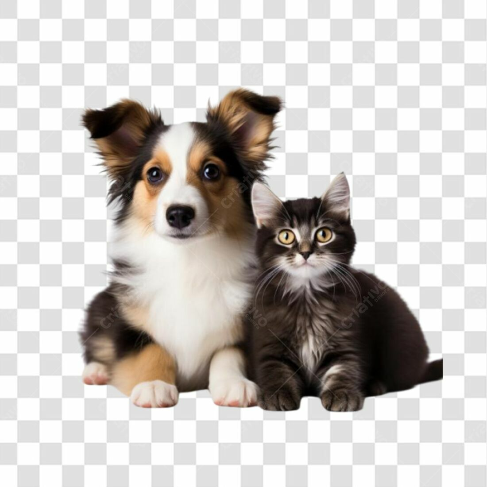

O gato é um animal doméstico que possui diversos comportamentos interessantes. Ele é conhecido por ser independente, mas também pode ser muito carinhoso com seus donos.
O gato também pode ser muito curioso e brincalhão, especialmente quando está sozinho em casa.

O cachorro é um animal doméstico que também possui diversos comportamentos interessantes. Ele é conhecido por ser leal, mas também pode ser muito brincalhão com seus donos.
O cachorro também pode ser muito protetor com seus donos, especialmente quando sente que estão em perigo.